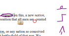

Write all over your documents
Ink for Word is an addon to Microsoft Word that brings enhanced annotation support to Word documents. Using a Tablet PC or other writing device, you can mark up your documents by writing comments in the margins and underlining words in the body of the document. As you change the document, all of your marks move with your text.
Ink for Word also enables you to change documents with the pen. You can mark up a page with standard proof-reading marks, and the marks are instantly understood and applied to the document.
Let's see it
See Ink for Word in action in this video demo. The software is an early pre-alpha build.

Watch the video
7.75MB 2m 8s
1264x512, requires sound
Wait, doesn't Word already have ink functionality?
Microsoft Word has considerable support for writing on documents, but it's not perfect. Most noticable is the inability to reflow marks that are written in the body of a document. When the document is changed, the marks don't move with the text, and quickly become irrelelvant.
Additionally, the ability to write comments in the margin of a page is limited to the right margin, and requires pushing buttons and writing in boxes. Ink for Word let's you write all over the document whenever you want - there's no buttons to push or boxes to write in. It groups your comments together and makes sure they move with the document as it changes.
Finally, Word does not interpret and apply Tablet PC gestures or proof-reading marks. This time consuming and tedious task is left up to the person editing the document.
Development
Ink for Word is being written by Phil Crosby and Michael Quinn. It runs on Office 2003 and Office 12.